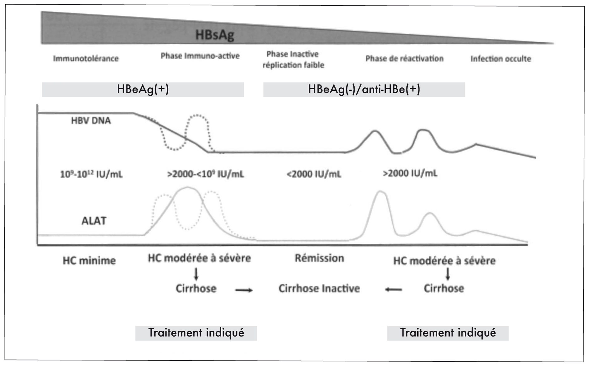
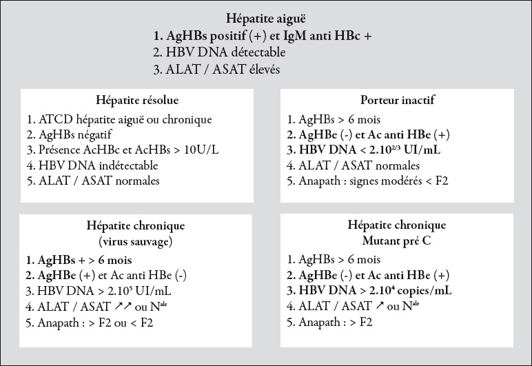
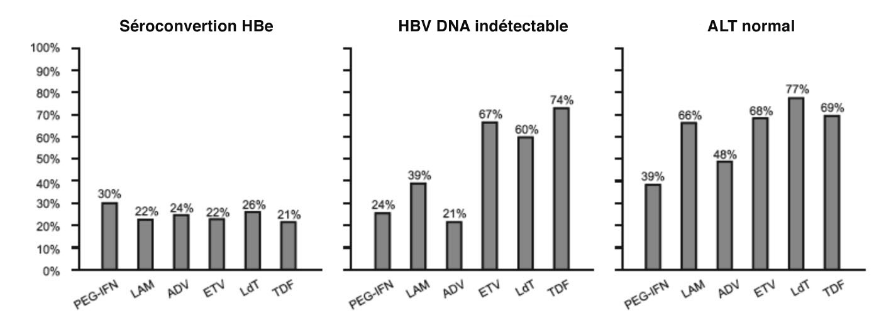
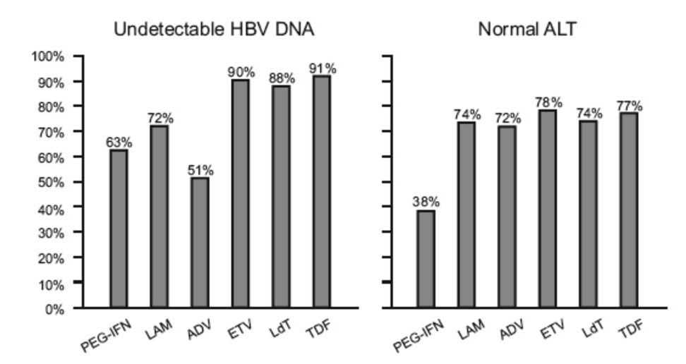
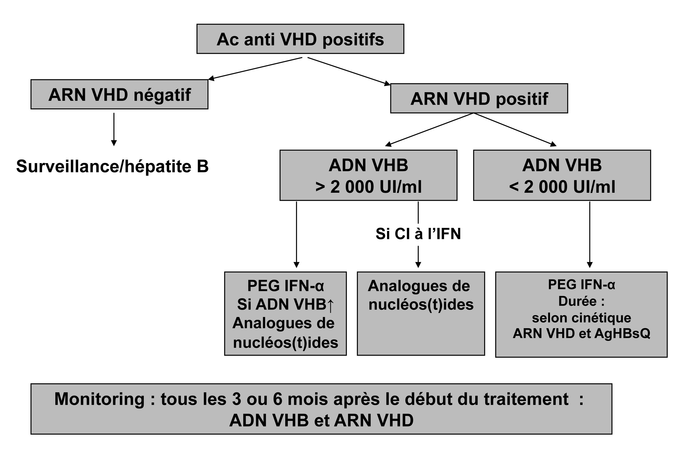
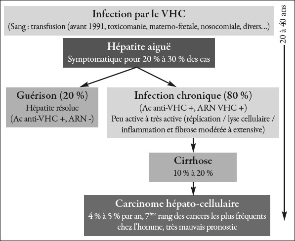
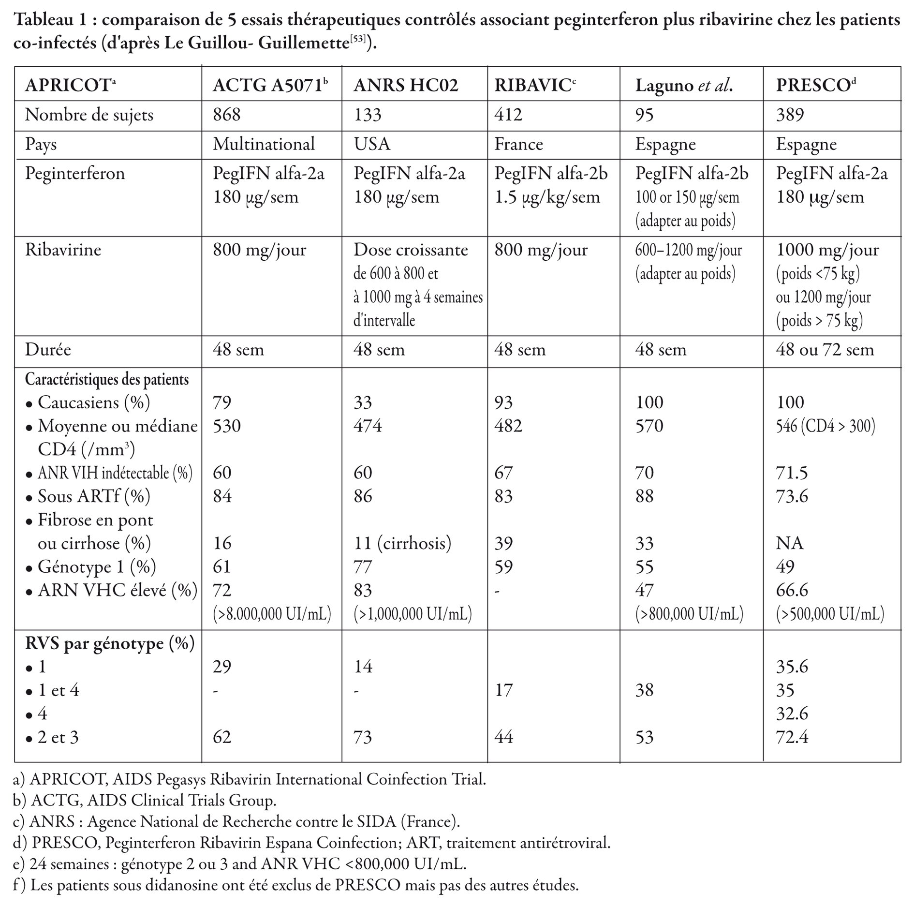

Traitement des hépatites B, C, D
Les hépatites virales sont un problème majeur de santé publique au niveau international. Environ 2 milliards de sujets dans le monde ont été en contact avec le VHB, soit qu'ils aient une infection, soit qu'ils aient éliminé partiellement le virus [1]. Quatre cents millions d'individus sont porteurs chroniques d'une infection par le virus de l'hépatite B (VHB) et parmi ceux-ci, environ à 15 millions sont co-infectés par un virus satellite du virus de l'hépatite B appelé le virus de l'hépatite Delta (VHD).
Dans le monde, près de 200 millions de sujets sont également infectés par le virus de l'hépatite C [2]. Les chiffres concernant la mortalité et la morbidité globale de ces infections sont partiellement
connus. L'OMS estime qu'environ 2 millions de décès par an sont dus aux infections par les virus des hépatites C (http://www.who.int/fr/).
On sait également que les patients porteurs d'une infection chronique ont un risque majeur d'évoluer vers la cirrhose du foie et le carcinome hépato-cellulaire (le risque serait de 200 par rapport à un sujet non infecté [3, 4] ).
Dans les pays développés, les hépatites B et C sont également responsables d'une grande partie des transplantations hépatiques [1] .
L'objectif de cette revue est de faire le point sur le traitement des hépatites B, C et Delta en envisageant les schémas thérapeutiques les plus adaptés à l'Afrique.
Nous aborderons d'abord le traitement des hépatites B, le traitement des co-infections B-Delta, le traitement des hépatites B chez les patients VIH puis le traitement des hépatites C et celui des
hépatites C chez les patients vivant avec le VIH.
I. Traitement des hépatites B
1. Le virus de l'hépatite B
Le génome du VHB est constitué d'un ADN, partiellement double brin, de 3 200 nucléotides. Il possède 4 cadres de lectures ouverts codant respectivement pour les protéines de surface (gènes pré-S1, pré-S2, et S), les protéines de capside (gènes pré-C et C), la polymérase (gène P) et une protéine transactivatrice de gènes cellulaires et viraux (gène X) [5-7].
La diversité génétique du VHB est à l’origine de la distinction de huit génotypes viraux, dénommés de A à H, et de mutants [8]. Les génotypes A et E sont les principaux génotypes circulant en Afrique [8,9], mais une forte prévalence de génotype D peut aussi être retrouvée dans certains pays africains [9] .
Enfin et surtout, il existe des mutations de résistance aux antiviraux actifs sur le VHB et notamment des analogues nucléotidiques et nucléosidiques également actifs sur le VIH [10] .
Epidémiologie
Il y a environ 400 millions de personnes infectées par le VHB dans le monde avec des zones de très forte prévalence comme l'Afrique où, en moyenne, la prévalence de l'AgHBs dans la population est, en général, comprise entre 8 et 10 ‰ [11] . Des études plus précises ont montré l'importance de la prévalence de l’AgHBs chez les donneurs de sang dans plusieurs régions de l’Afrique où l’hépatite B est
endémique: 5 à 20 % au Nigeria [12,13], 15 à 20 % au Sénégal [14], 9,5% en Tanzanie [15].
Histoire naturelle
Les infections par le VHB ont des modes évolutifs différents. L'évolution vers l'hépatite chronique B avec des complications est un processus dynamique qui est schématiquement divisé en plusieurs phases qui ne se succèdent pas forcément [6,16]. Ces phases sont schématisées dans la figure 1.
1) Après l'infection aiguë, il existe généralement une phase d'infection caractérisée par une tolérance immunitaire : elle associe de forts niveaux de réplication du VHB avec des charges virales élevées (en général > 9 log) et des transaminases normales ou très peu élevées et la présence d'antigène HBe (Ag HBe). Si, pendant cette phase, on réalisait une ponction-biopsie hépatique, on trouverait, dans la
plupart des cas, une quasi-absence de lésions inflammatoires, nécrotiques ou de fibrose.
2) A cette phase succède le plus souvent une phase dite d'immuno-élimination qui se caractérise par une fluctuation du taux des transaminases, correspondant à l'attaque des cellules hépatiques par les cellules de la réponse immunitaire. Cette phase s'accompagne d'une baisse de la réplication du virus car la réponse immunitaire parvient partiellement à éliminer le virus, et souvent d'une disparition de l'Ag HBe, avec apparition d'anticorps (Ac) anti-HBe correspondant à l'apparition d'un mutant (préC) qui devient la population viralemajoritaire par rapport au virus sauvage.
A ce stade, la ponction-biopsie hépatique, si elle est réalisée, montre des lésions nécrotico-inflammatoires modérées ou sévères et une fibrose hépatique qui pourra évoluer vers une cirrhose (score Metavir ≥ A2 F2). Cette phase d'immuno-élimination peut durer peu de temps ou très longtemps et explique la variété des atteintes hépatiques retrouvées chez les patients.
3) La phase de portage inactif du virus succède généralement à cette phase d'immuno-élimination si cette dernière a été partiellement inefficace. Elle se
caractérise par des taux sériques très bas d'ADN du VHB, des transaminases normales et, au niveau histologique, des lésions inactives.
Au cours de cette phase de portage inactif, peuvent survenir des phases de réactivation qui parfois des hépatites aiguës et se caractérisent par des taux fluctuants d'ADN viral, des transaminases élevées, un fort taux d'évolution vers des lésions hépatiques sévères.
4) La dernière phase (rarement constatée) peut correspondre à une élimination de l'Ag HBs qui devient indétectable dans le sérum avec également une charge virale indétectable. Cependant, on sait que des formes de réplication (dites superenroulées) de l'ADN du VHB persistent au niveau de la cellule hépatique et les infections occultes peuvent être à l'origine de réactivation. Ces phases de réactivation surviennent plus souvent chez des patients qui reçoivent des traitements immuno-suppresseurs.
Figure 1 : histoire naturelle de l'hépatite B chronique

Le diagnostic de l'hépatite B est rappelé dans la figure 2 qui schématise l'apparition/disparition des marqueurs de l'infection au cours des différents
stades de la maladie.
Figure 2 : diagnostic des formes cliniques de l'hépatite B

2. Caractéristiques des hépatites B en Afrique
En Afrique, du fait du caractère asymptomatique des différentes phases de l'hépatite B, on est le plus souvent confronté soit à la découverte du portage du virus lors d'un bilan, ou bien malheureusement le plus souvent au stade des complications de l'hépatite chronique B que sont la cirrhose et le cancer du foie.
3. Objectifs du traitement de l'hépatite B
L'objectif général du traitement de l'hépatite B est de réduire au maximum la réplication virale de façon à permettre une normalisation des transaminases, une amélioration des lésions hépatiques histologiques et surtout une prévention des complications. En effet, on sait aujourd'hui que la viro-suppression prolongée permet une régression de la fibrose liée à l'hépatite B, et donc des risques de cirrhose, de décompensation et de carcinome hépato-cellulaire.
En revanche, comme vu plus haut, avec les traitements actuels, le VHB ne peut complètement être éradiqué.
Les 2 types de molécules utilisées aujourd'hui dans le traitement des hépatites B sont l'interféron alpha ou les analogues de nucléosides ou de nucléotides. Si ces traitements permettent une réduction de la charge virale en dessous d'un seuil établi par l'EASL (European Association for the Study of the Liver) en 2009 (2000 UI/mL), une rémission de la maladie peut être espérée [17-21] .
a) Options thérapeutiques
1- L'interféron alpha a une action antivirale et immuno- stimulante. Actuellement, c'est l'interféron pégylé, qui allonge la demi-vie de l'interféron, qui est utilisé généralement à des doses de 180 µg par semaine pendant une durée minimale de un an. Plusieurs études ont fait le point (en particulier des méta-analyses) sur l'efficacité du traitement par l'interféron pégylé chez les patients Ag HBe+ avec des durées de traitement allant de 24 à 48 semaines [20] . Environ 1/3 des patients développent une séroconversion anti-HBe au terme du suivi. Des suivis à long terme montrent des séroconversions anti-HBs qui dépassent également 10 %. Les facteurs prédictifs de bonne réponse à l'interféron sont essentiellement le génotype du VHB (le génotype A répond beaucoup mieux que le D, le B répond mieux que le C), mais également les taux des transaminases (élevées) et le taux d'ADN viral (bas) avant traitement [20] .
2- Les analogues nucléosidiques
Les principaux analogues nucléosidiques actifs sur le VHB sont la lamivudine (LAM), l'adéfovir, l'entécavir la telbivudine et le ténofovir. D'autres molécules sont en cours d'enregistrement comme l'emtricitabine. L'efficacité clinique de la lamivudine a été démontrée à partir de nombreux essais avec des taux de séroconversion cependant moins importants qu'avec l'interféron pégylé. Le problème principal réside dans la sélection de virus mutants résistants lorsque la lamivudine est donnée de façon prolongée. Différentes données indiquent que la prévalence de la résistance à la lamivudine est de 20 % à 1 an, 40 % à 2 ans et près de 70 % à 4 ans.
Concernant l'adéfovir, l'efficacité thérapeutique a également été démontrée avec des taux de résistance moins importants que la lamivudine mais qui ne sont cependant pas négligeables.
Les deux médicaments actuellement les plus actifs contre le VHB et qui entraînent le moins de résistance sont l'entécavir et le ténofovir [17,18,20] . Ces molécules ont une efficacité antivirale beaucoup plus importante que la lamivudine et l'adéfovir, et engendrent très peu, voire pas de résistance chez les patients traités [17,20] .
Efficacité
Chez les patients Ag HBe+, le taux de séroconversion des anti-HBe+, qui coïncide le plus souvent avec une négativation durable de l'ADN du VHB et une normalisation des transaminases, est situé entre 20 % et 30 %.
Chez les sujets Ag HBe-, l'efficacité antivirale n'est mesurable que sur la négativité prolongée de l'ADN du VHB. Avec ces traitements, on obtient des réductions très significatives de la charge virale (environ 80 % à 90 % de négativation à 1 an) [19] . Cependant, le recul est insuffisant (5 ans pour le ténofovir) pour évaluer l'efficacité à long terme, en particulier en terme de séroconversion anti-HBs.
Les facteurs prédictifs de réponse aux analogues nucléosidiques sont généralement communs avec l'interféron. Les transaminases élevées et le taux d'ADN du VHB (< 7 Log) sont prédictifs de bonne réponse. En revanche, il n'a pas été démontré de réelle différence concernant l'efficacité des analogues en fonction du génotype du VHB. Chez les patients infectés par un mutant préC, l'interféron pégylé paraît plus efficace que chez les patients porteurs d'un virus sauvage en raison probablement d'un taux d'ADN du VHB préthérapeutique plus bas. Chez ces patients, les taux de réponse prolongée après arrêt du traitement sont significativement plus importants avec l'interféron pégylé par rapport à la lamivudine en monothérapie [20] .
Combinaisons thérapeutiques
La première étude publiée sur l'association interféron et lamivudine montre un bénéfice n'atteignant pas la significativité [22] . Après un an, 29 % des patients traités par l'association interféron-lamivudine avaient une séroconversion anti-HBe, versus 19 % dans le groupe interféron seul. En fait, des études de suivi à long terme, en particulier 4 ans après l'arrêt du traitement, ont montré que les deux groupes n'étaient pas différents mais que le taux de séroconversion anti-HBs après 4 ans avoisinait 40 %. Ceci montre qu'un recul suffisant est nécessaire pour apprécier l'efficacité à long terme de l'interféron pégylé associé ou non à une autre molécule.
Tendances actuelles et indications thérapeutiques
Les tendances actuelles sont de traiter par interféron pégylé les patients jeunes et ceux infectés par un génotype A ou B et éventuellement de proposer un traitement par analogue pour les autres patients [20] . La durée recommandée du traitement par l'interféron pégylé est de un an. En revanche, la durée de traitement par les analogues nucléosidiques ou nucléotidiques n'est pas définie. Certains protocoles en cours sont prévus pour une durée de 5 ans. On s'oriente de plus en plus vers des traitements “à la carte” avec une adaptation en fonction de la réponse virologique sous traitement.
En fait, les indications thérapeutiques dépendent de la sévérité de l'atteinte hépatique. Les patients qui ont une atteinte hépatique très peu sévère et une charge virale élevée (supérieure à 7 Log) ne doivent pas être traités. Ces patients sont en phase d'immuno-tolérance et le traitement aurait peu d'efficacité, il pourrait même sélectionner des mutants de résistance.
Pour les autres formes d'hépatites actives chroniques, les indications thérapeutiques sont à poser en fonction du génotype et du contexte clinique, comme souligné dans les recommandations récentes de l'EASL [20] .
Définition de la réponse au traitement
La réponse au traitement est définie par une négativation durable de l'ADN du VHB. Elle s'accompagne généralement d'une normalisation des transaminases. La non-réponse au traitement est définie par l’absence de diminution significative ou de négativation de l’ADN viral sous traitement. En effet, malgré l’importante panoplie de molécules désormais disponibles, il arrive que certains patients ne présentent pas de diminution de l’ADN du VHB sous traitement ou présentent une diminution de cet ADN, mais avec remontée secondaire de ce dernier. Il y a plusieurs explica-
tions à cette non réponse.
La première à envisager est une mauvaise observance du traitement. La deuxième est une résistance intrinsèque du virus. Dans ce cas, si les lésions hépatiques sont importantes ou sévères, il faut envisager des traitements combinés.
Les non-réponses sont plus fréquentes chez les patients avec une charge virale élevée et les patients infectés par des génotypes C ou D.
Résultats des essais thérapeutiques
On dispose d'essais randomisés/contrôlés qui comparent l'efficacité à un an du traitement de l'hépatite chronique B par les différentes molécules disponibles : l'interféron alpha pégylé, la lamivudine, l'adéfovir, l'entécavir, la telbivuline et le ténofovir.
Comme indiqué dans les figures 3a et 3b, chez les patients Ag HBe+, probablement porteurs d'un virus dit "sauvage", l'obtention d'une séroconversion HBe, c'est-à-dire l'apparition d'anticorps anti-HBe avec disparition des Ag HBe associée à une négativation durable de l'ADN du VHB, est obtenue plus souvent avec l'interféron qu'avec les analogues. Cependant, ce ne sont que des résultats après un an de traitement, les analogues sont généralement prescrits plus longtemps.
Figure 3a : résultats des essais thérapeutiques conduits
chez des patients Ag HBe+

Chez les patients Ag HBe-, les taux d'indétectabilité de l'ADN du virus B obtenus sont plus élevés avec toutes les molécules mais particulièrement avec les derniers analogues nucléosidiques ou nucléotidiques (entécavir, ténofovir).
La finalité du traitement est l'obtention d'une disparition de l'Ag HBs avec une séroconversion anti-HBs. Cette élimination de l'Ag HBs est faible au bout d’un an (4 % sous interféron) mais elle augmente au cours du temps chez les patients traités. On dispose aujourd'hui de certaines données sur les résultats à long terme de ces traitements et en particulier avec l'entécavir (5 % à 2 ans), le ténofovir (8 % à 3 ans) et la telbivudine où les taux de disparition de l'Ag HBs augmentent au cours du temps. Il en est de même pour les patients après arrêt du traitement par l'interféron.
La figure 3b montre les taux de disparition de l'ADN du VHB avec les différentes molécules. En cas de traitement par les analogues, une non-réponse ou un échappement viral (remontée de l'ADN après une baisse de ce dernier) feront craindre une résistance.
Le problème de la résistance sera traité dans le chapitre co-infections.
Figure 3b : résultats des essais thérapeutiques conduits
chez des patients Ag HBe-
4. Co-infections par le VHB et le VIH
Epidémiologie des co-infections VIH-VHB en Afrique
L'Afrique est le continent le plus touché par le VIH, le VHB et le VHC. Ces trois infections virales présentent des modes de transmission communs. La co-infection par le VHB est observée en moyenne chez environ 10 % des malades infectés par le VIH [23,24] . Les quelques différences observées selon les études et selon les pays s'expliquent essentiellement par des effectifs très variables et des groupes de populations hétérogènes. Il semble que la prévalence de l'infection chronique par le VHB soit voisine chez les patients VIH+ et chez les patients VIH-. En Tanzanie, une étude sur 1 599 donneurs de sang a révélé une prévalence de co-infectés de 8,6 % versus 8,7 % de mono-infectés VHB [25] .
Histoire naturelle de la maladie : influences réciproques des infections VIH-VHB
L'infection par le VIH augmente le risque d'un passage à l'infection chronique, après une infection B aiguë, avec un risque de 20 % d'évolution vers la chronicité, contre 4 à 5 % chez les sujets VIH négatifs [26]. Les patients infectés par le VIH-VHB ont la particularité d'être en état d'immunotolérance vis-à-vis du VHB, avec souvent des taux de transaminases normaux, une augmentation de la réplication virale B [27] . Une augmentation de la mortalité liée à des complications hépatiques est associée à un taux de CD4 bas chez les patients co-infectés [27] . Les patients co-infectés VIH-
VHB ont une progression plus rapide vers la fibrose hépatique sévère, une augmentation du risque de complications hépatiques (cirrhose et/ou CHC).
Données virologiques concernant la résistance du VHB aux analogues nucléosidiques utilisés dans le cadre de l'infection à VIH
Plusieurs analogues nucléosidiques ou nucléotidiques, également actifs sur le VIH, sont aujourd'hui disponibles pour le traitement des infections par le virus B [17,18] . Ces traitements conduisent inévitablement à la sélection de variants viraux conduisant à un échappement au traitement qui peut parfois être dramatique.
Pour chaque molécule, il existe des mutations spécifiques des souches de VHB affectant la sensibilité aux antiviraux. La première molécule à avoir été utilisée, à la fin des années 1990, est la lamivudine (LAM) puis les autres molécules (emtricitabine = FTC, ténofovir = TDF) ont vu le jour.
Chez le patient VIH, les premiers cas de résistance ont été décrits assez précocement avec une incidence annuelle de la résistance proche de 20 % avec la LAM [24] . Même chez les sujets immuno-compétents, la sélection de souches résistantes à la LAM peut atteindre 70 % chez des patients traités au-delà de 5 ans [23,24,28] , ce qui laisse penser que chez les patients VIH, elle serait encore plus importante que chez des gens traités de façon prolongée.
Si les mutations émergeant sous LAM sont particulièrement bien caractérisées, la situation est plus complexe pour les molécules plus récentes.
L'impact clinique de la sélection de souches résistantes a surtout été bien démontré chez le patient mono-infecté traité par la LAM. Ainsi, de nombreuses études ont montré que, lors de l'émergence de souches résistantes à la LAM, il existait une aggravation de l'évolution clinique de la maladie avec des risques de décompensation hépatique. Des cas de réactivation grave d'hépatite B chez des patients co-infectés résistants à la LAM ont été rapportés au Brésil [29] .
Dans les conditions cliniques habituelles, la résistance est suspectée lorsque, après une diminution de la charge virale VHB ou une négativation de cette dernière, il existe une ré-augmentation de la charge virale de plus de 1 log par rapport à la valeur la plus basse atteinte, confirmée sur au moins deux prélèvements successifs (définition actuelle de la résistance virologique).
Recommandations thérapeutiques en cas de résistance
L'association de deux molécules après un échec est indispensable et la succession de deux monothérapies est déconseillée. Etant donné les résistances croisées entre des molécules de même classe, il ne faudra ni les associer entre elles ni choisir l'une pour remplacer l'autre. Les données de résistance incitent aussi toujours à l'association d'un analogue nucléotidique (ADV ou TDF) avec soit un L-nucléoside chez le patient VIH association TDF + FTC, ou l'entécavir + TDF ou LAM + TDF. La diminution de sensibilité à l'entécavir de souches résistantes à la LAM prohibe l'utilisation de cette molécule en seconde ligne derrière un L-nucléoside, en particulier chez le patient VIH.
Accessibilité aux molécules anti-VHB en Afrique
Les problèmes posés par le traitement des hépatites B sont essentiellement économiques. En effet, le coût d'un traitement par l'interféron est très élevé, environ
1 000 euros par mois, même si on devrait pouvoir disposer de médicaments génériqués.
Le deuxième problème est le mode d'administration de l'interféron qui est injectable et qui nécessite une conservation à + 4° C. De plus, on est confronté également à la problématique du suivi virologique des patients traités. Peu de laboratoires en Afrique peuvent réaliser les tests sérologiques comme les marqueurs HBe et encore plus rares sont ceux qui disposent de tests moléculaires pour quantifier l’ADN viral.
Les transaminases sont un bon marqueur de réponse au traitement mais, avec l'interféron pégylé, elles peuvent rester légèrement élevées sous traitement.
Pour ce qui est des analogues nucléosidiques ou nucléotidiques, malgré leur gratuité dans le cadre des programmes de lutte contre le VIH, ils ne sont que rarement délivrés pour le traitement des hépatites B.
Seuls des programmes nationaux pourraient permettre aux patients qui nécessitent un traitement de bénéficier gratuitement de ces molécules. Sinon leur coût est relativement élevé (50 € par mois pour la LAM, 300 € pour le TDF). Cependant, des génériques beaucoup moins chers sont disponibles.
Les auteurs viennent d'apprendre que certains industriels viennent de signer des accords avec les PED pour céder des brevets à bas prix, afin de pouvoir commercialiser des molécules non encore génériquées à des prix très bas, ce qui serait le cas pour le ténofovir.
5. Co-infections par le VHB et le VHD
Le VHD a été découvert en 1977 par Rizzetto et coll. chez des sujets porteurs du VHB [30]. Les hépatites Delta ont été décrites surtout en Italie, au Japon et en
Amazonie. On sait également que l’infection par le VHD est très fréquente dans les pays de forte endémie d’hépatite B comme l’Afrique sub-saharienne.
La co-infection (simultanée) ou la surinfection (chez un sujet préalablement infecté par le VHB) sont responsables d'une maladie hépatique beaucoup plus sévère que la mono-infection [31] .
Au cours des co-infections ou des surinfections peuvent survenir des hépatites fulminantes beaucoup plus fréquemment que lors des mono-infections. De plus, l'évolution est marquée plus souvent vers des formes sévères, des cirrhoses et des cancers du foie.
Les co-infections par le VHB et le VHD sont caractérisées généralement par une réplication forte du VHD avec la co-existence d'une très faible réplication du VHB qui serait due à une répression de la réplication du virus B par les protéines Delta.
Pour mémoire, le diagnostic des hépatites Delta repose sur la détection concomitante de l'Ag HBs et d'anticorps anti-Delta. Une hépatite chronique avec une très faible charge virale du VHB associée à des anticorps anti-Delta est très évocatrice d'une hépatite chronique Delta. La recherche de l'ARN Delta étant encore une affaire de laboratoire très spécialisé, il semble illusoire pour l'instant de la mettre en place en Afrique. En revanche, la détection/quantification de l'ADN du VHB est possible dans le laboratoire assurant déjà la quantification de la charge virale VIH, y compris après transport sur papier buvard.
Traitement
Le seul traitement actif sur les infections par le virus de l'hépatite Delta est l'interféron alpha et en particulier l'interféron pégylé qui est plus actif. Il sera donné
aux mêmes doses que dans l'hépatite B comme vu plus haut [31, 32] . Généralement, l'interféron pégylé peut entraîner une amélioration des hépatites chroniques Delta avec normalisation des transaminases et disparition de l'ARN Delta. Cependant, tous les patients ne répondent pas à ce traitement. Même si les
patients ont une réponse virologique et biochimique (disparition de l'ARN Delta et normalisation des transaminases), la durée du traitement doit souvent dépasser 2 ans voire 5 ans.
En effet, la rechute est quasiment inévitable si le traitement est arrêté trop tôt. Les taux de réponse rapportés dans les études récentes vont de 20 % à 50 % [30, 31] .
Un schéma de la prise en charge est proposé sur la figure 4 ci-dessous.
Figure 4 : co-infections/surinfections Delta

Des nouvelles molécules en développement, inhibant l’entrée du VHB dans la cellule ou le relargage de l’AgHBs, pourraient s’avérer efficaces.
Problèmes posés par le traitement des hépatites Delta en Afrique
Les problèmes posés par le traitement par l'interféron en Afrique sont d'une part son prix élevé, d'autre part la nécessité de respecter la chaîne du froid. Même si, comme vu plus haut, il existe désormais des interférons génériqués moins chers dont il faudra s'assurer de la qualité.
D'autres espoirs peuvent provenir des molécules en développement (inhibiteurs de la prénylation…).
II. Traitement des hépatites C
1. Généralités sur le VHC
Le virus de l’hépatite C est un virus à ARN, enveloppé, dont le génome code pour des protéines virales, structurales et non structurales qui ont des fonctions
importantes pour la biologie du virus et peuvent interagir de façon complexe avec les protéines de l’hôte [33] . La cinétique de la réplication du VHC est très rapide. L’étude de la cinétique virale sous traitement par l’interféron a récemment permis de montrer que les hépatocytes infectés par le VHC produisent chaque jour des quantités très importantes de virions. La libération des virions dans la circulation générale à partir des hépatocytes est compensée par leur dégradation périphérique, expliquant que la charge virale plasmatique reste stable, en général, chez un patient
chroniquement infecté. Cependant, les cinétiques de réplication virale sont extrêmement rapides [34] .
L’administration des traitements antiviraux modifie profondément ces cinétiques virales et peut aboutir à une destruction des cellules infectées. La réduction de production de virus dans les cellules infectées ou la destruction de virus libre peut se compléter par une réponse immunitaire efficace, et aboutir à une clairance virale définie par une disparition complète des cellules infectées de l’organisme. Ce phénomène existe très probablement chez les patients traités qui ont de façon durable une disparition de l’ARN viral et, à l’inverse du virus proche comme le VIH (le virus de l’immunodéficience humaine) et du VHB, on peut sans doute parler de guérison complète et d'éradication virale après traitement d’une hépatite C chronique.
Des progrès très importants ont été réalisés depuis une dizaine d’années dans la prise en charge thérapeutique des malades infectés par le VHC. En France aujourd’hui, 1,2 % de la population possède des anticorps dirigés contre le virus de l’hépatite C. Cependant, 20 % de ces sujets n’ont pas d’infection réelle et ne sont pas virémiques, les anticorps témoignant d’un contact ancien avec le virus
Comme l'hépatite B, l'infection par le virus de l'hépatite C (VHC) est l'une des principales causes d'hépatopathie dans le monde et l'on estime à environ
200 millions un nombre de sujets infectés [2, 3] .
Compte tenu de la répartition géographique de ce virus, la majeure partie des sujets qui sont infectés ne connaissent pas leur statut et on estime que le nombre de carcinomes hépato-cellulaires liés au VHC va atteindre son sommet dans les années 2010-2020. Il s'agit donc d'un réel problème de santé publique en particulier dans les pays en développement. Dans les pays africains, aujourd'hui, l'impact des infections par le VHC sur les maladies du foie est peut-être méconnu par rapport à celui de l'hépatite B mais, dans certains pays où l'infection atteint des prévalences supérieures à 5 %, l'hépatite C va réellement poser problème.
Récemment, l'EASL [35] a fait des recommandations sur le traitement de l'hépatite C, et l'Association Française pour l'Etude du Foie, au mois d'avril, a repris ces recommandations pour les mettre au goût du jour pour 2011-2012, en raison de l'arrivée de nouvelles molécules conduisant à des trithérapies [36] .
Dans le contexte des pays en développement, la gestion et la prise en charge thérapeutique des hépatites C posent un réel problème du fait du coût des traitements.
2. Epidémiologie
Comme vu plus haut, la prévalence du VHC est variable suivant les régions et peu importante en Europe du Nord et aux Etats-Unis mais, en Europe de l'Est, elle peut atteindre 5 % de la population. L'Egypte est un des pays de plus forte prévalence avec 9 % [3]. Certains pays d'Afrique sont aussi touchés [2, 37, 38] ,
vraisemblablement en raison d'une transmission nosocomiale qui a été importante, comme cela a été probablement le cas par exemple au Cameroun [38] . En effet, les modes de transmission de l'hépatite C étaient principalement la transfusion sanguine, l'utilisation de matériel injectable non à usage unique et bien sûr la toxicomanie intraveineuse et nasale. A l'inverse de l'hépatite B, la transmission sexuelle est probablement responsable de beaucoup moins de cas.
3. Histoire naturelle
L'histoire naturelle de l'hépatite C est très différente de celle de l'hépatite B. En effet, la plupart des infections aiguës sont le plus souvent asymptomatiques mais évoluent vers une forme chronique dans 50 % à 90 % des cas ( figure 5).
L'histoire naturelle est caractérisée par une évolution variable sur les individus, avec une progression vers les lésions hépatiques qui peut être lente ou plus rapide.
Les cofacteurs qui augmentent les risques de survenue d'une fibrose et d'une cirrhose puis d'un carcinome hépato-cellulaire sont la consommation d'alcool, le diabète, l'âge au moment de l'infection, la co-infection par le VIH ou par un autre virus [39] .
C'est ainsi que 10 % à 40 % des patients avec une infection chronique vont développer une cirrhose en 10 à 30 ans. Chez les patients cirrhotiques, les complications sont essentiellement la mortalité par décompensation hépatique, hémorragie digestive ou infection d'ascite, qui est de 4 % par an, et le carcinome hépato-cellulaire dont l'incidence est de 1 % à 5 % par an chez les patients cirrhotiques. En l'absence de traitement, les patients atteints de carcinome hépato- cellulaire ont une probabilité de décès de 33 % après le diagnostic. Aujourd'hui, l'hépatite C est responsable de la majeure partie des carcinomes hépato-cellulaires dans les pays développés, mais ce sera le cas également dans les pays en développement [4] .
4. Rappel sur le diagnostic de l'hépatite C
Le diagnostic de l'hépatite C repose sur les examens sérologiques et, en particulier, la mise en évidence d'anticorps anti-VHC [40] ( figure 5). Cependant, cette dernière ne suffit pas à affirmer l'infection puisque environ 20 à 30 % des sujets ayant des anticorps n'ont pas de réplication virale. Il faut donc authentifier la
réplication du virus par la recherche de l'ARN viral pour affirmer qu'il existe une infection. En cas de diagnostic d'hépatite C confirmée, il faut évidemment
réaliser un bilan pour prendre en charge le patient. Ce bilan comprend un bilan virologique partiellement basé sur la recherche de génotype viral, qui conditionne les indications thérapeutiques, et la quantification de la charge virale pour évaluer les chances de réponse et avoir une détermination de la charge virale pour suivre le traitement [40] .
Figure 5 : histoire naturelle de l'infection par le VHC

Il faut également apprécier la sévérité de la maladie du foie. Ce chapitre a connu un essor considérable ces dernières années. En effet, auparavant la biopsie du foie était essentielle pour faire le bilan de la fibrose. Ces dernières années, des marqueurs non invasifs de fibrose hépatique ont été mis au point, en particulier
des scores calculés à partir de paramètres biologiques qui permettent de quantifier la fibrose du foie (Fibro-mètre, Fibrotest, Hépascore…). Une autre technique est l'élastométrie impulsionnelle (Fibroscan). Il s'agit d'un dispositif qui permet de mesurer la dureté du foie et d'évaluer également le degré de fibrose. Dans les pays en développement, ces testsont beaucoup d'avenir car ils sont plus simples à réaliser qu'une biopsie du foie, ils sont moins risqués et permettent un dépistage de la fibrose par un simple examen ou une simple prise de sang [41-43] .
5. Polymorphisme génétique
En plus des facteurs virologiques (génotype, charge virale) qui sont prédictifs de la réponse au traitement, ont été mis en évidence des facteurs génétiques quisont aussi associés à une meilleure réponse au traitement de base de l'hépatite C (interféron pégylé et ribavirine). Il s'agit du polymorphisme de l'IL28, l'interleukine 28B, dont certains profils sont associés à une meilleure réponse [44,45] .
6. Traitement
Compte tenu de l'histoire naturelle de l'hépatite C, l'objectif principal du traitement est d'éliminer le virus. Le virus de l'hépatite C est un virus ARN qui ne s'intègre pas à l'ADN de la cellule cible : la cellule hépatique. Il est donc possible d'éliminer le virus sans que des formes de résistance puissent persister au sein de l'hépatocyte comme c'est le cas de l'hépatite B ou du VIH.
La réponse soutenue au traitement est définie par un ARN indétectable 6 mois après l'arrêt du traitement. On sait, grâce à de nombreuses études, que cette disparition persistante de l’ARN est associée à une amélioration des lésions hépatiques, en tout cas chez les patients qui n'ont pas une fibrose sévère. Certains patients cirrhotiques peuvent avoir une régression de la fibrose. En revanche, ceux qui ont une cirrhose évoluée avec hypertension portale et insuffisance hépato-cellulaire, ou qui présentent une progression de la fibrose, doivent être surveillés strictement car le risque de carcinome hépato-cellulaire persiste.
Le traitement de base de l'hépatite C en 2011 est donc une association entre l'interféron alpha pégylé et la ribavirine (analogue de la guanosine). Les doses et les durées de traitement dépendent du génotype. Les doses recommandées d’interféron sont variables en fonction du type d’interféron pégylé alfa 2a (180 μg /semaine) ou 2b (1,5 μg /kg), les doses de ribavirine vont de 800 mg à 1000 mg/jour. Des études récentes semblent montrer que des doses plus élevées pourraient être plus actives, en particulier des adaptations en fonction du poids, voire du taux de ribavirine. Pour les patients infectés par un génotype 1 ou 4, la durée du traitement est de 48 semaines. Pour les patients infectés par un génotype 2 ou 3, la durée du traitement est de 24 semaines [35,36] .
6. Facteurs prédictifs de réponse au traitement
Les principaux facteurs prédictifs de réponse au traitement sont le génotype, la charge virale avant traitement, l’âge, le degré de fibrose et un polymorphisme favorable de l'IL28. Les équipes américaines ont également montré que les sujets de race noire répondaient moins bien [35,36,46] .
Le problème de cette bithérapie interféron pégylé et ribavirine est qu'il s'agit d'un traitement lourd qui est associé à des effets secondaires importants, en particulier une fatigue souvent marquée, des cas de syndrome dépressif majeur, des anomalies thyroïdiennes, des maladies auto-immunes (psoriasis), pour l'interféron. La ribavirine donne principalement une anémie quelquefois sévère conduisant parfois à l'utilisation d'érythropoïétine pour compenser cette anémie, et accessoirement des manifestations cutanées.
L'année 2011 est marquée par l'arrivée de nouvelles stratégies thérapeutiques associant des molécules de la classe des inhibiteurs de la protéase NS3 NS4 du virus de l'hépatite C que sont le télaprévir et le bocéprévir, qui doivent être prescrits en combinaison avec l'interféron pégylé et la ribavirine [36,46] . En France, ces trithérapies ont reçu récemment l'AMM (recommandations AFEF 2011 http://www.afef.asso.fr/).
Ces molécules ne sont efficaces en association avec l'interféron et la ribavirine que chez les patients infectés par un génotype 1. Si le taux de guérison des patients infectés par un génotype 1 était de 40 % à 50 % et celui des malades infectés par un génotype 2 de 70 % à 80 % avec la bithérapie, la trithérapie augmente considérablement les chances de réponse des patients infectés par un génotype 1, en moyenne un gain de 30 % de réponse est observé avec les trithérapies. Les facteurs de bonne réponse à la trithérapie sont assez similaires aux facteurs de réponse à la bithérapie, en particulier l'âge jeune, le sexe féminin, l'absence de fibrose sévère. En fait, le meilleur facteur prédictif de réponse, comme avec la bithérapie, est la disparition précoce de l'ARN du virus de l'hépatite C sous traitement, ce qui est prédictif d'une réponse à long terme (http://www.afef.asso.fr/).
Les principales problématiques sont leur coût prohibitif pour les pays en développement et l'existence d'effets secondairesmajeurs. Il s'agit de problèmes
cutanés pour le telaprévir et surtout d'anémie avec le boceprévir.
Fort heureusement, de nouvelles molécules moins toxiques et encore plus efficaces sont en développement. Elles pourront probablement permettre,
à terme, de se passer de l’interféron, mais probablement pas de la ribavirine (AASLD 2011 http://www.aasld.org/Pages/Default.aspx).
III. Co-infections VIH-VHC
1. Epidémiologie et histoire naturelle
Comme vu plus haut, les virus VHC et VIH ont les mêmes modes de transmission, mais leur contagiosité est différente [47] . La transmission du VHC est majoritairement parentérale. La prévalence de la co-infection par le VHC varie donc en fonction des populations à risque et des modes de transmission du VIH, allant de 10 % à 14 % chez les sujets qui ont des conduites sexuelles à risque, à 80 %, voire 90 % chez les usagers de drogue IV [48] . Quand on compile les chiffres de prévalence des infections par le VHC chez les patients infectés par le VIH, on obtient une prévalence d'environ 30 % [48] .
De nombreuses études ont montré que l'infection par le VIH aggravait l'histoire naturelle de l'infection par le VHC [49,50] . Une méta-analyse dans le début des années 2000 vient résumer ces études [51]. Dans cette dernière, la co-infection par le VIH a un risque relatif de complication hépatique d'environ 6, et un risque relatif de cirrhose d'environ 2, en comparaison avec la mono infection par le VHC.
L'effet de l'infection par le VHC sur la progression de la maladie à VIH est plus discuté et moins clair. En tout cas, les patients atteints d'hépatite virale (VHB et VHC) ont plus souvent des complications liées à l'hépatotoxicité des traitements anti-rétroviraux.
2. Traitements et recommandations
Des recommandations concernant la prise en charge et le traitement des hépatites chroniques C chez les patients infectés par le VIH ont fait l'objet de documents publiés dans la littérature, en particulier après la conférence de consensus européenne de 2006 mais aussi l'EASL et l'AASLD.
Il faut insister sur l'importance du bilan pré-thérapeutique. En effet, les traitements actifs contre le VHC sont associés à une toxicité importante et à des effets indésirables, notamment hématologiques et psychiatriques. Ils ont aussi une efficacité variable en fonction de certains facteurs qu’il faut apprécier avant traitement.
Les objectifs du traitement sont essentiellement l'éradication de l'infection par le VHC, la prévention de la progression de la fibrose et, chez les patients atteints de
cirrhose, la prévention des complications de la cirrhose y compris du carcinome hépato-cellulaire.
Les traitements de l'infection par le VHC ont considérablement progressé. Cependant, chez les patients co-infectés par le VIH, l'éradication virale reste rare [52] alors que les bénéfices histologiques et cliniques sont plus souvent appréciables. De nombreuses études ont maintenant validé le traitement associant interféron pégylé et ribavirine comme traitement de référence chez les patients co-infectés VIH/VHC. Ce traitement entraîne une réponse virologique soutenue, définie par un ARN du VHC négatif 6 mois après l'arrêt du traitement, allant de 14 % à 36 % chez les patients infectés par un génotype 1 et 4 et de 43 % à 73 % chez les patients infectés par un génotype 2 ou 3 (tableau 1) [53] . En l'absence de contre-indication au traitement, les patients qui peuvent en bénéficier sont principalement des patients infectés par les génotypes 2 et 3 avec une charge virale faible (< à 400 000 UI /ml) ; ils doivent cependant être traités en 48 semaines (au lieu de 24 semaines chez les patients mono-infectés). Les patients avec une fibrose sévère, les infections aiguës par le VHC ou les infections par le VHC avec atteinte extra-hépatique (cryoglobunémie, vascularite et néphropathie) font l'objet de recommandations spécifiques (EASL).
3. Facteurs prédictifs de réponse au traitement
Les principaux facteurs prédictifs de réponse au traitement chez les patients co infectés ont fait l'objet de plusieurs études. En plus des facteurs virologiques
habituels chez les patients mono-infectés (génotype, charge virale), le taux de CD4 est l'un des meilleurs facteurs prédictifs de bonne réponse [54, 55] .
Le suivi virologique est très important également pour prédire la réponse. En général, les critères de réponse sont assez semblables à ceux retrouvés chez
les patients mono-infectés (âge, sexe, race, charge virale, génotype, degré de fibrose). L'absence de diminution significative de la charge virale à la semaine 12 est un facteur de très mauvaise réponse. Dans l'étude APRICOT, chez les patients qui n'avaient pas de diminution d'au moins 2 log par rapport à la charge virale initiale, il n'a pas été observé de réponse soutenue (valeur prédictive négative de 98% à 100%) [53] . Il est donc justifié d'arrêter le traitement chez les patients qui ne présentent pas de baisse significative de la charge virale après 12 semaines.
En ce qui concerne les effets secondaires rapportés chez les patients co-infectés traités par bithérapie, ils touchent environ 10 % à 15 % d'entre eux et rejoignent les effets indésirables rapportés chez les patients mono-infectés. Cependant, il faut souligner l'importance, chez les patients co-infectés, de l'effet délétère de certaines associations médicamenteuses, en particulier la didanosine et la zidovudine.
4. Résultats des thérapeutiques anti-VHC chez les patients co-infectés
Le tableau 1 résume les résultats des 5 grandes études contrôlées utilisant l'association interféron pégylé et ribavirine chez les patients co-infectés.

Globalement, la réponse virologique soutenue est plus faible que chez les patients mono-infectés mais elle n'est pas négligeable, allant de 14 % à 73 % suivant les génotypes et les études. Des schémas thérapeutiques adaptés en fonction de facteurs prédictifs de réponse pourraient améliorer ces résultats un peu décevants, en particulier en utilisant des doses plus fortes de ribavirine adaptées en fonction des taux plasmatiques, et des traitements plus longs en fonction de la réponse virologique précoce.
Beaucoup d'espoirs se portent vers les nouvelles molécules anti-protéases (télaprévir), inhibiteurs de polymérase, avec des résultats prometteurs chez les patients mono-infectés. Cependant, la toxicité de ces molécules et les multiples interactions médicamenteuses font que, pour l'instant, les trithérapies ne sont utilisées que dans le cadre de protocoles.
5. Problèmes posés par les traitements anti-VHC en Afrique
Les problèmes posés par le traitement des hépatites C sont essentiellement économiques. En effet, le coût d'un traitement par l'interféron et la ribavirine est très élevé, environ 15 000 €, même si on devrait pouvoir disposer de médicaments génériqués. Quant aux nouvelles molécules, en particulier les anti-protéases, elles sont d'un coût encore plus prohibitif puisque actuellement, le coût d'un traitement mensuel est de plus de 3 000 € pour le bocéprévir, dont la durée d'administration est plus longue (36 semaines), et 12 000 € pour le télaprévir (24 semaines), en plus de la bithérapie.
Comme pour le VHB, le deuxième problème est le mode d'administration de l'interféron qui est injectable et qui nécessite une conservation à 4° C. On est confronté également à la problématique du suivi virologique des patients traités. Peu de laboratoires en Afrique disposent de tests moléculaires capables de réaliser des recherches d'ARN viral. Les transaminases sont un bon marqueur de réponse au traitement mais avec l'interféron pégylé, elles peuvent rester légèrement élevées sous traitement.
En conclusion, le traitement des hépatites B et C a fait des progrès remarquables ces dernières années en raison du développement de nouvelles molécules de plus en plus efficaces pour le VHB avec très peu de résistance. Pour le VHC, l'apparition des anti-protéases et bientôt des anti-polymérases fait espérer que la production de ces molécules pourra être accélérée et compte tenu du marché, à des prix plus raisonnables.
Bibliographie
1- Hatzakis A, Wait S, Bruix J, Buti M, et al. The state of hepatitis B and C in Europe: report from the hepatitis B and C summit conference. J Viral Hepat. 2011 Sep;18 Suppl 1:1-16.
2- Negro F, Alberti A. The global health burden of hepatitis C virus infection. Liver Int. 2011 Jul;31 Suppl 2:1-3.
3- Perz JF, Armstrong GL, Farrington LA, Hutin YJ, Bell BP. The contributions of hepatitis B virus and hepatitis C virus infections to cirrhosis and primary liver cancer worldwide. Journal of Hepatology. 2006;45(4):529–538.
4- McGlynn KA, London WT. The global epidemiology of hepatocellular carcinoma: present and future. Clin Liver Dis. 2011 May.
5- Grimm D, Thimme R, Blum HE. HBV life cycle and novel drug targets. Hepatol Int. 2011 Jun;5(2):644-53.
6- Dienstag JL. Hepatitis B virus infection. N Engl J Med. 2008;359(14):1486–1500.
7- Urban S, Schulze A, Dandri M, Petersen J. The replication cycle of hepatitis B virus. J Hepatol. 2010;52(2):282–284.
8- Kay A, Zoulim F. (2007). Hepatitis B virus genetic variability and evolution. Virus Research, 127:164–176.
9- Schaefer S (2007). Hepatitis B virus taxonomy and hepatitis B virus genotypes. World Journal of Gastroenterology, 13(1) : 14-21
10- Stuyver LJ, Locamini SA, Lok A, Richman DD, Carman WF, Dienstag JL, Schinazi RF. (2001). Nomenclature for antiviral-resistant human hepatitis B virus mutations in the polymerase region. 33(3): p.751-7.
11- Hou J, Lui Z, Gu F. Epidemiology and prevention of hepatitis B virus infection. International J Med Sci 2005; 2:50-7.
12- Otegbayo JA, Fasola FA, Abja A. Prevalence of hepatitis B surface and e antigens, risk factors for viral acquisition and serum transaminase among blood donors in Ibadan, Nigeria. Trop Gastroenterol 2003; 24:196-7.
13- Uneke CJ, Ogbu O, Inyama PU, Anyanwu GI, Njoku MO, et al. Prevalence of hepatitis-B surface antigen among blood donors and human immunodeficiency virus-infected patients in Jos, Nigeria. Mem Inst Oswaldo Cruz. 2005; 100:13-6.
14- Vray M, Debonne JM, Sire JM, Tran N, Chevalier B, Plantier JC, et al. Molecular epidemiology of hepatitis B virus in Dakar, Senegal. J Med Virol. 2006; 78:329-34.
15- Matee MI, Magesa PM, Lyamuya EF. Seroprevalence of human immunodeficiency virus, hepatitis B and C viruses and syphilis infections among blood donors at the Muhimbili National Hospital in Dar Es Salaam, Tanzania. BMC Public Health 2006;6:21.
16- Calvin Q. Pan et Jin X. Zhang. (2005). Natural History and Clinical Consequences of Hepatitis B Virus Infection. International Journal of Medical Sciences; 2(1):36-40.
17- Ayoub WS, Keeffe EB. Current antiviral therapy of chronic hepatitis B. Aliment Pharmacol Ther. 2011 Nov; 34(10):1145-58.
18- Fung J, Lai CL, Seto WK, Yuen MF. Nucleoside/nucleotide analogues in the treatment of chronic hepatitis B. J Antimicrob Chemother. 2011 Oct 7.
19- Wiersma ST, McMahon B, Pawlotsky JM, Thio CL, et al. World Health Organization Department of Immunization, Vaccines and Biologicals. Treatment of chronic hepatitis B virus infection in resource-constrained settings: expert panel consensus. Liver Int. 2011 Jul;31(6):755-61.
20- European Association for the Study of the Liver. EASL Clinical Practice Guidelines: Management of chronic hepatitis B. J Hepatol 2009;50.
21- Lavanchy D. Hepatitis B virus epidemiology, disease burden, treatment, and current and emerging prevention and control measures. J Viral Hepat. 2004;11:97–107.
22- Marcellin P, Lau GK, Bonino F, Farci P, et al. Peginterféron Alfa-2a HBeAg-Negative Chronic Hepatitis B Study Group. Peginterféron alfa-2a alone, lamivudine alone, and the two in combination in patients with HBeAg-negative chronic hepatitis B. N Engl J Med. 2004 Sep 16;351(12):1206-17.
23- Thibault V, Benhamou Y, Seguret C, et al. Hepatitis B virus (HBV) mutations associated with resistance to lamivudine in patients coinfected with HBV and human immunodeficiency virus. J Clin Microbiol. 1999 Sep;37(9):3013-6.
24- Bartholomeusz A, Locarnini S. Hepatitis B virus mutations associated with antiviral therapy. J Med Virol. 2006;78 Suppl 1:S52-5.
25- Matee MI, Magesa PM, Lyamuya EF. Seroprevalence of human immunodeficiency virus, hepatitis B and C viruses and syphilis infections among blood donors at the Muhimbili National Hospital in Dar Es Salaam, Tanzania. BMC Public Health 2006;6:21.
26- Konopnicki D, Mocroft A, de Wit S, et al. Hepatitis B and HIV: prevalence, AIDS progression, response to highly active antiretroviral therapy and increased mortality in the Euro-SIDA cohort. AIDS. 2005 Mar 24;19(6):593-601.
27- Soriano V, Mocroft A, Peters L, et al. EuroSIDA. Predictors of hepatitis B genotype and viraemia in HIV-infected patients with chronic hepatitis B in Europe. J Antimicrob Chemother 2010 Mar;65(3):548-55.
28- Matthews GV, Bartholomeusz A, Locarnini S, et al. Characteristics of drug resistant HBV in an international collaborative study of HIV-HBV-infected individuals on extended lamivudine therapy. AIDS. 2006 Apr 4;20(6):863-70.
29- Mendes-Correa MC, Pinho JR, Locarnini S, Yuen L, et al. High frequency of lamivudine resistance mutations in Brazilian patients co-infected with HIV and hepatitis B. J Med Virol. 2010 Sep;82(9):1481-8.
30- Hughes SA, Wedemeyer H, Harrison PM. Hepatitis delta virus. Lancet. 2011 Jul 2;378(9785):73-85.
31- Farci.P. Delta hepatitis: an update. J Hepatol 2003; 39:212-19.
32- Farci P. Treatment of chronic Hepatitis D : New Advances, old challenges. Hepatology 2006; 44:536-9.
33- Brody H. Hepatitis C. Nature. 2011 Jun 8;474(7350):S1.
34- Ashfaq UA, Javed T, Rehman S, Nawaz Z, Riazuddin S. An overview of HCV molecular biology, replication and immune responses. Virol J. 2011 Apr 11;8:161.
35- EASL Clinical Practice Guidelines: management of hepatitis C virus infection. European Association For The Study Of The Liver. J Hepatol. 2011 Aug;55(2):245-64
36- Fontaine H, Sogni P, Pol S. New treatments of chronic hepatitis C. Presse Med. 2011 Nov 4.
37- Connell LE, Salihu HM, Salemi JL, August EM, Weldeselasse H, Mbah AK. Maternal hepatitis B and hepatitis C carrier status and perinatal outcomes. Liver Int. 2011
Jun 7.
38- Birguel J, Ndong JG, Akhavan S, Moreau G, et al. Viral markers of hepatitis B, C and D and HB vaccination status of a health care team in a rural district of Cameroon. Med Trop (Mars). 2011 Apr;71(2):201-2. French.
39- Thomas DL, Astemborski J, Rai RM, et al. The natural history of hepatitis C virus infection: host, viral, and environmental factors. Jama 2000, 284:450-456.
40- Lunel-Fabiani F PC: Outils virologiques dans le diagnostic et le suivi des hépatites C : utilisation et apport de nouveaux tests. Gastroenterol Clin Biol 2003, 27:718-726.
41- Boursier J, Dib N, Oberti F, Cales P: Characteristics and interpretation of blood tests for liver fibrosis. Gastroenterol Clin Biol 2007, 31:511-523; quiz 500, 531-512.
42- Cales P, Oberti F, Michalak S, Hubert-Fouchard I, Rousselet MC, Konate A, Gallois Y, Ternisien C, Chevailler A, Lunel F: A novel panel of blood markers to assess the degree of liver fibrosis. Hepatology 2005, 42:1373-1381.
43- Cales P, de Ledinghen V, Halfon P, Bacq Y, Leroy V, Boursier J, Foucher J, Bourliere M, de Muret A, Sturm N, et al. Evaluating the accuracy and increasing the reliable diagnosis rate of blood tests for liver fibrosis in chronic hepatitis C. Liver Int 2008.
44- O'Brien TR, Everhart JE, Morgan TR, et al. HALT-C Trial Group. An IL28B genotype-based clinicalprediction model for treatment of chronic hepatitis C. PLoS One. 2011; 6(7):e20904.
45- Gonzalez SA, Keeffe EB. IL-28B As a Predictor of Sustained Virologic Response in Patients with Chronic Hepatitis C Virus Infection. Gastroenterol Hepatol (N Y). 2011 Jun;7(6):366-73.
46- Soriano V, Vispo E, Poveda E, Labarga P, Martin-Carbonero L, Fernandez-Montero JV, Barreiro P. Directly acting antivirals against hepatitis C virus. J Antimicrob Chemother. 2011 Aug;66(8):1673-86.
47- Sulkowski MS. Viral hepatitis and HIV coinfection. J Hepatol 2008, 48:353-367.
48- Sherman KE, Rouster SD, Chung RT, Rajicic N: Hepatitis C Virus prevalence among patients infected with Human Immunodeficiency Virus: a cross-sectional analysis of the US adult AIDS Clinical Trials Group. Clin Infect Dis 2002, 34:831-837.
49- Eyster ME, Diamondstone LS, Lien JM, Ehmann WC, Quan S, Goedert JJ: Natural history of hepatitis C virus infection in multitransfused hemophiliacs: effect of coinfection with human immunodeficiency virus. The Multicenter Hemophilia Cohort Study. J Acquir Immune Defic Syndr 1993, 6:602-610.
50- Pol S, Lamorthe B, Thi NT, Thiers V, Carnot F, Zylberberg H, Berthelot P, Brechot C, Nalpas B: Retrospective analysis of the impact of HIV infection and alcohol use on chronic hepatitis C in a large cohort of drug users. J Hepatol 1998, 28:945-950.
51- Graham CS, Baden LR, Yu E, Mrus JM, Carnie J, Heeren T, Koziel MJ: Influence of human immunodeficiency virus infection on the course of hepatitis C virus infection: a meta- analysis. Clin Infect Dis 2001, 33:562-569.
52- Carrat F, Bani-Sadr F, Pol S, et al. Pégylated interferon alfa-2b vs standard interferon alfa-2b, plus ribavirin, for chronic hepatitis C in HIV-infected patients: a randomized controlled trial. Jama 2004, 292:2839-2848.
53- H. Le Guillou-Guillemette, P. Calès, F. Lunel. Actualités sur les co-infections VIH-VHC. Antibiotiques (2008) 10, 167-175.
54- Soriano V, Puoti M, Sulkowski M, Cargnel A, Benhamou Y, Peters M, Mauss S, Brau N, Hatzakis A, Pol S, et al. Care of patients coinfected with HIV and hepatitis C virus: 2007 updated recommendations from the HCV-HIV International Panel. Aids 2007, 21:1073-1089.
55- Payan C, Pivert A, Morand P, Fafi-Kremer S, Carrat F, Pol S, Cacoub P, Perronne C, Lunel F: Rapid and early virological response to chronic hepatitis C treatment with IFN alpha2b or PEG-IFN alpha2b plus ribavirin in HIV/HCV co-infected patients. Gut 2007, 56:1111-1116.
Développement et Santé, N° 200, 2012